capulus
Fünf Repositories, ein Homelab
Hosts, Cluster, App und Dokumentation sind getrennte Projekte mit eigenen Releases. Das Diagramm zeigt, wie sie zusammenspielen, darunter stehen die aktuellen Versionen.
Architektur
Wer wen bereitstellt
Ansible richtet Hosts und Cluster ein, ArgoCD rollt alles aus capulus-core aus, die iOS-App spricht mit dem Cluster, der Operator übernimmt Backups im Cluster und die Dokumentation landet automatisch im Wiki.
# vereinfachtes Beispiel
kind: Backup
metadata:
name: nextcloud-nightly
spec:
schedule: "0 3 * * *"
retention: 14d
✓ restic snapshot erzeugt
Projekte
Alle Repositories mit aktueller Version
Die Versionen kommen automatisch aus den GitHub-Releases.
Projekte werden geladen …
Zuletzt veröffentlicht